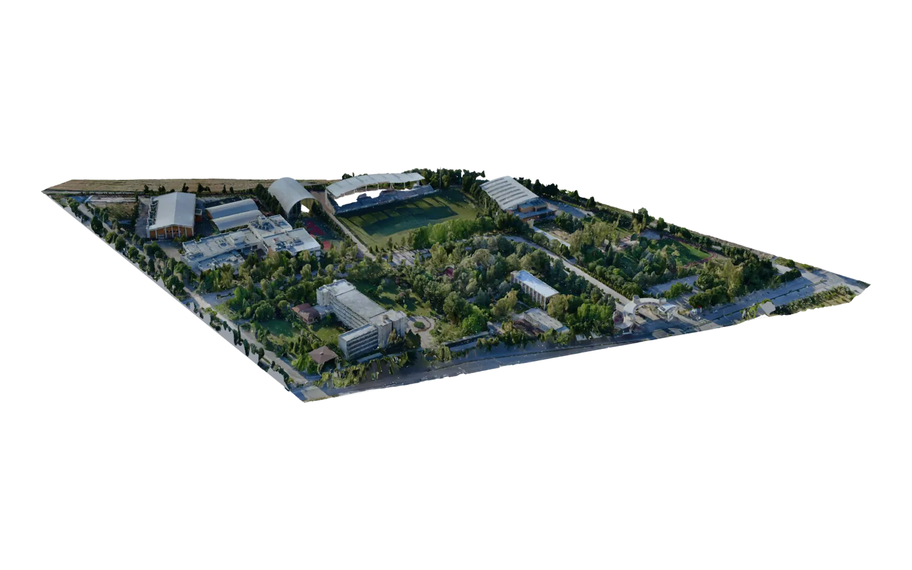
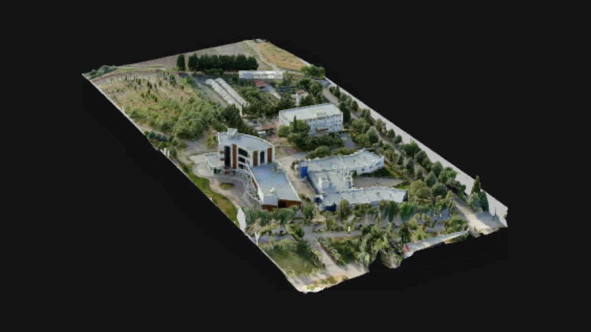
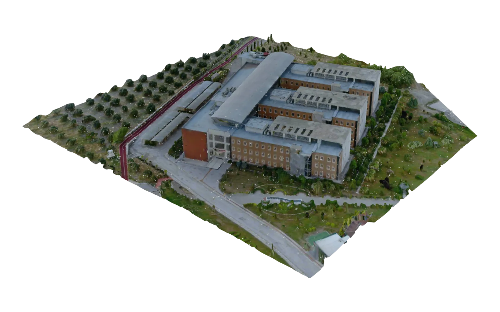
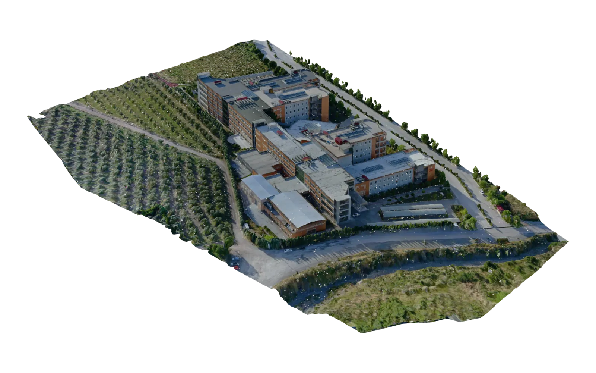
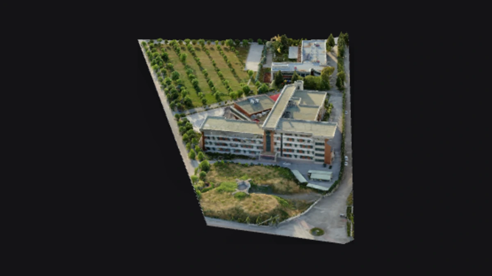
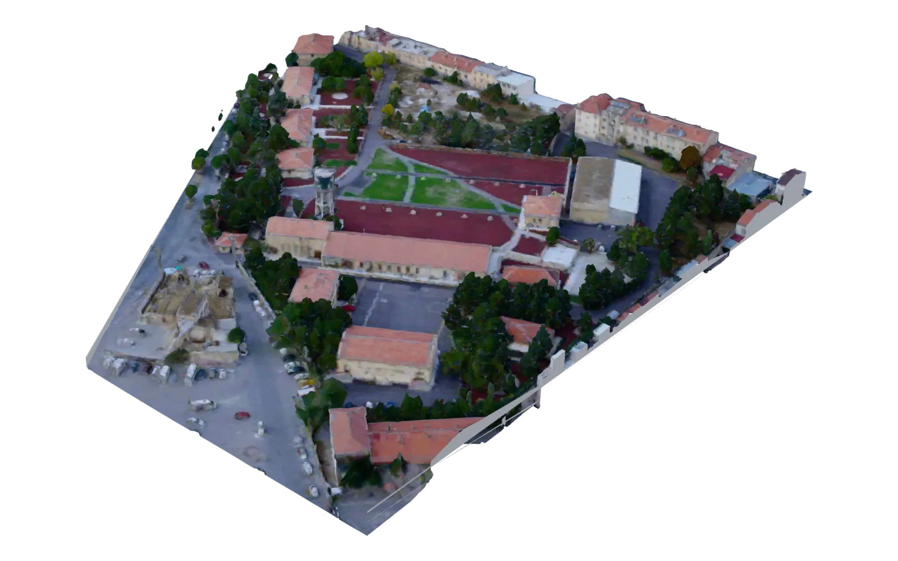
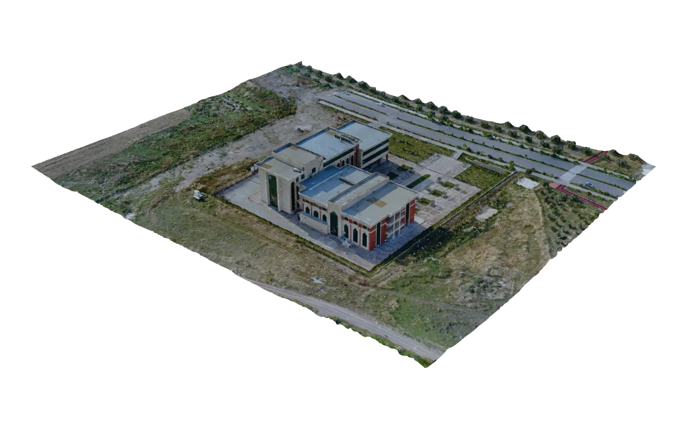
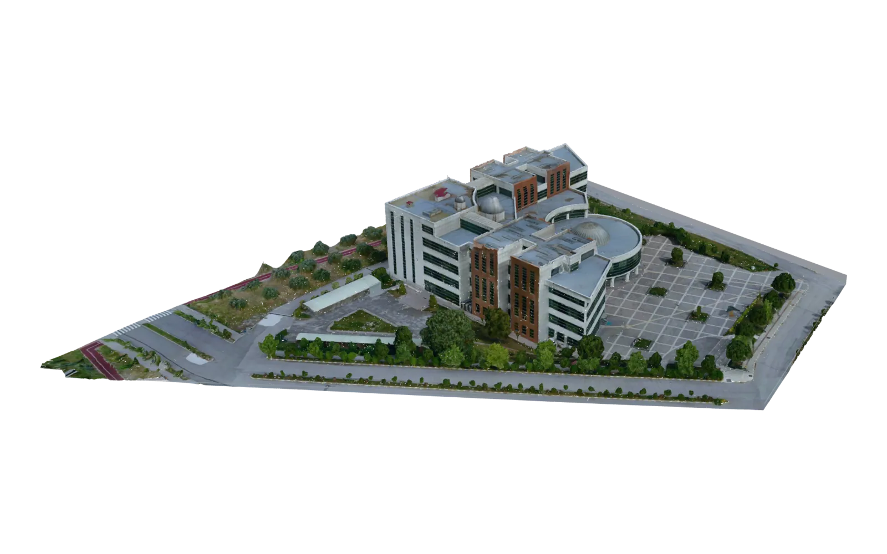
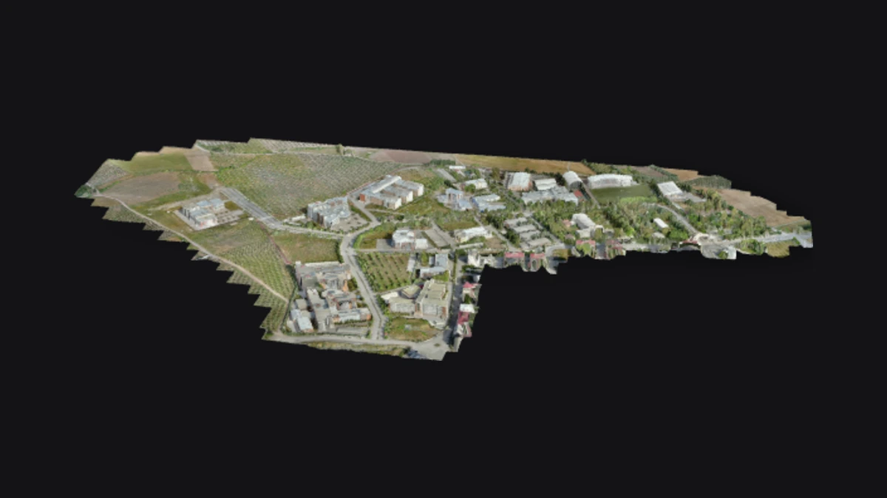
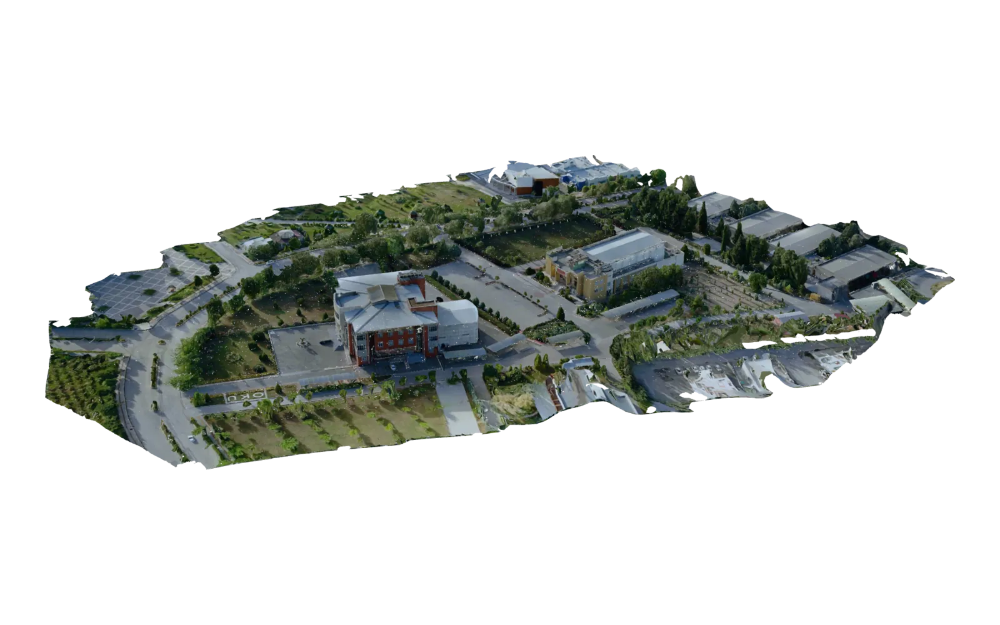

3DAR uyumlu3.2 MB
A‑B BlokEğitim ve spor kompleksiA ve B blokları ile spor tesislerini birlikte inceleyin.

3DAR uyumlu35.0 MB
C BlokEğitim ve laboratuvar bloğuC Blok laboratuvar yapısını ayrıntılı 3B model üzerinden keşfedin.

3DAR uyumlu26.7 MB
D BlokEğitim bloğuD Blok yapısını farklı açılardan inceleyin.

3DAR uyumlu35.1 MB
E BlokEğitim bloğuE Blok yapısını farklı açılardan inceleyin.

3DAR uyumlu28.0 MB
F BlokEğitim bloğuF Blok yapısını farklı açılardan inceleyin.

3DAR uyumlu14.4 MB
Fabrika YerleşkesiUygulama yerleşkesiFabrika yerleşkesinin yapı ve çevre düzenini birlikte görün.

3DAR uyumlu21.7 MB
İlahiyatFakülte binasıİlahiyat Fakültesi binasını 3B olarak inceleyin.

3DAR uyumlu1.5 MB
KütüphaneKütüphaneMerkez kütüphane binasını farklı açılardan keşfedin.

3DAR uyumlu6.2 MB
OKÜ Yerleşke Genel PlanYerleşke genel planıOKÜ yerleşkesinin bütününü ve yapıların kampüsteki dağılımını görün.

3DAR uyumlu2.2 MB
RektörlükYönetim ve amfi binasıRektörlük ve amfi yapısını ayrıntılı olarak inceleyin.